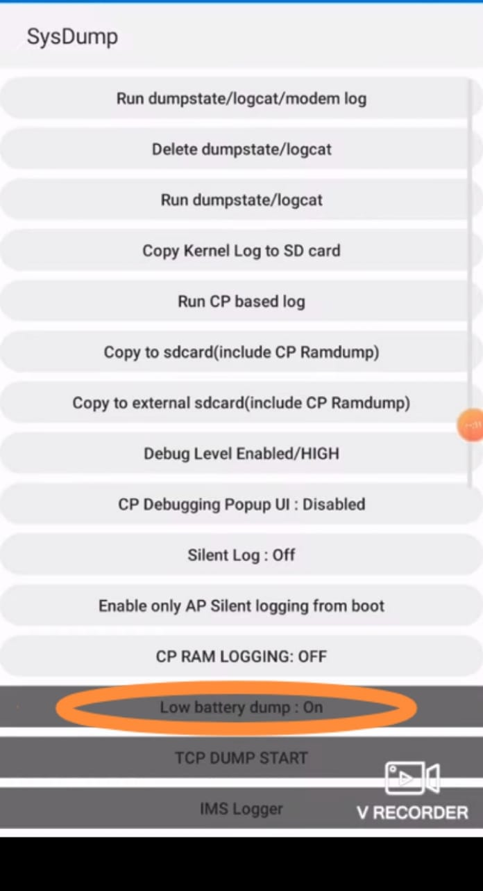
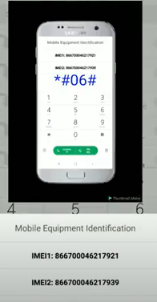
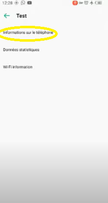
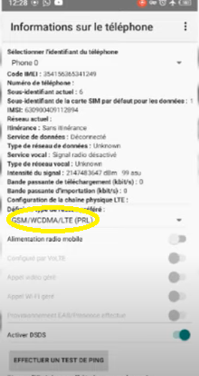
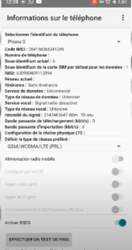
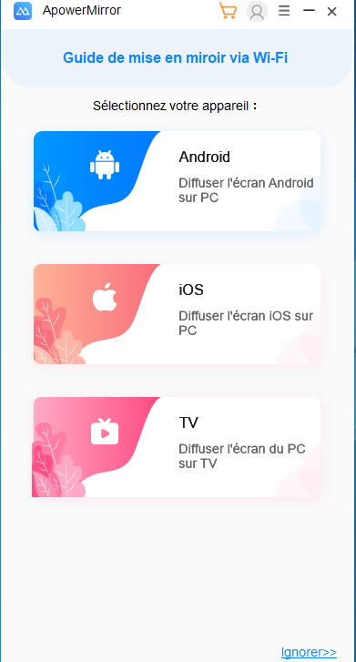

ici vous trouverai plein d'astuces et de code ou des options qui rendras votre téléphonne meilleures:
ici vous allez trouver beaucoup de combinaison de codes que il faut les écrire sur le téléphonne (ou vous faite les appels téléphonniques) ces codes vous aiderons à plus connaitre votre téléphonne ou meme l'améliorer si vous voulez:
la combinaison qui vous aidera a accélérer la charge de son téléphonne est:*#9900# puis cette page va apparaitre
cliquez sur l'option low battery dump au début elle sera off mais après avoir cliquez ça va l'activer.
IMEI est l’acronyme de International Mobile Equipment Identity.Chaque terminal de téléphonie mobile a son propre numéro IMEI, constitué d’une série de 15 à 17 chiffres. En clair, ce numéro est la carte d’identité du téléphone.
il faut simplement tapez le code *#06# puis cette page va apparaitre
 et maintenant vous povez voir votre code IMEIoui vous avez bien lu vous pouvez avoir une connexion sans wifi ni données mobiles ça vous parez dingue non mais c'est la réalité et tous ça grace au code *#*#4636#*#*
voici l'interface
cliquez sur information sur le téléphonne pour ce qui utilise 2 carte sim faite attention sur vous utilisez la première alors cliquez sur "information sur le téléphonne 1" et si vous utilisez la deuxième cliquez sur "information sur le téléphonne 2" ne vous inquétez pas ça ne va rien changer
et maintenant rechercher LTE ONLY
puis activer cette options et atttention avant de cliquez sur cette option assurez vous que le mode avion est activé
et mainetenant vous ppouvez naviguer sur internet en libértez mais attention vous ne pouvez pas tout faire vous aurez seulement quelques possibilité ça serai trop beau pour etre vrai:(
maintenant on vas vous présenter comment afficher l'écran son téléhonne sur pc vous n'avzez qu'a aller dans votre pc et télécharger cette application voici le lien
télécharger apppowermirroret pour téléhonne vous n'avez qu'a entrer dans le play store ou le app store et vous tapez apppowermirror
sur pc quand vous avez installer l'application cette page va apparitre et vous cliqué sur installer

puis vous allez attendre que le téléchargement soit términer après
vous choisissez votre type de téléphonne après vous devez installé l'appli sur téléhonne après l'avoir installé vous accepter tous ce qu'i demande et vous allez cliqué sur mirroir (désolé il n'ya pas de photos pour ce tuto sur téléphonne) puis vous allez choisir le meme type de conexion que dans votre pc soit via wifi ou clé usb aloes nous on vas choisir wifi car c'est le plus simple puis on vas choisir code pin et un code va appareitre sur le téléphonne vous cliqué sur wfi puis pin et vous entrer le code et voila votre téléphonne est connecté si vous avez un problème seulement cliqué sur cette video qui vous montra le tuto complet
video tuto complet